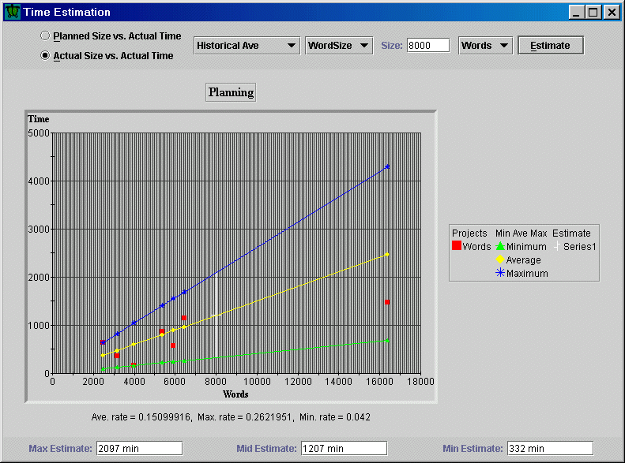

Reflective Software Engineering with the Leap toolkit
Introduction
Last modified: Fri Aug 27 16:27:25 HST 1999
Table of Contents
Are you a developer in an Internet-based software company, or do you plan
to work for one or even start one yourself? While the potential rewards
for involvement in such companies are astronomical, so are the risks. Part
of the risks in such companies arise from an "Internet Time" mentality, in
which initial time-to-market and short release cycles appear to play
a more dominant role in (at least short-term) business success than the
quality of the product.
While this "Just Ship It" philosophy has short term appeal, it also
contributes to the very low percentage of complex software systems that
ever see completion or profitability in such organizations. Despite very
real market pressures, attention must still be paid to at least some
basic engineering principles and practices if a software product is to
provide an adequate long-term return on investment. However,
Internet-based software companies (just like students) are typically
under-capitalized, over-worked, and lack the kinds of organizational
infrastructure (such as software quality groups, software process groups,
corporate standards and champions, project librarians, etc.) that
characterize traditional approaches to obtaining high software quality.
This book introduces an approach called reflective software engineering.
It is designed to support your professional development and help
you learn how to improve your ability to create software systems
effectively and efficiently. Unlike some other approaches,
reflective software engineering is oriented toward developers in "Internet
Time" environments, which means the method can't depend upon
traditional organizational infrastructure and commitment for its success.
What reflective software engineering does depend upon is that you are
intrinsically motivated to become a professional, highly skilled, perhaps
even world class software engineer. You don't have to be one yet---you just
have to have the desire and commitment to grow in that direction. You can
and should be motivated to become a professional, highly skilled software
engineer out of self-interest---the more skilled you are, the more
professional career choices will be available to you both within your
current organization and in others. Every concept in reflective software
engineering is oriented around your personal growth as a technology
professional.
Reflective software engineering is based upon an extremely simple and
obvious idea: people learn best from their own experience. To some extent,
every software developer learns from their own experience. But not all
software developers learn equally well or equally efficiently from their
experiences. Some developers seem to "plateau" at a certain point in their
development, while others take much longer than others to acquire basic
proficiency in an application area, language, or environment. Reflective
software engineering teaches a simple set of skills that, when combined
with appropriate tool support, can facilitate your ability to learn from
your own experience even in Internet Time environments.
To practice the concepts of reflective software engineering, you build a
set of work products that are related in such a way that your successes and
failures on early products can be leveraged into improvements on later work
products. We have designed an example curriculum for you to follow in
which the work products happen to be Java programs, and so that application
of reflective software engineering helps you learn more effectively from
your experiences hacking Java during the course. We could have just as
easily designed the curriculum around software designs in UML, or a set of
test plans, or a set of requirements specifications documents. To be
honest, the work products don't even need to be technical---you could use the
concepts of reflective software engineering on a set of creative writing
assignments. In fact, an important part of the curriculum is to apply the
concepts to a second kind of work product to help you "break out" of the
constraints of our example curriculum.
Reflective software engineering supports experience-based improvement in
your professional activities by helping you to structure your experience,
record it, and then analyze it to gain insights into ways in which you can
improve. In Internet Time environments, however, all of these efforts are
considered costly and potentially unnecessary "overhead", and so it is
critically important that:
- The amount of overhead is kept to a minimum.
- The payback from the overhead comes back relatively quickly and exceeds in
value the investment you made in the overhead.
To keep overhead to a minimum and to ensure that you can quickly see the
benefits of structuring, recording, and analyzing your experiences,
reflective software engineering works hand in hand with Leap, a software
engineering toolkit. Leap is an acronym for four of the
fundamental principles underlying reflective software engineering:
Lightweight, Empirical, Anti-measurement dysfunction, and Portable. By
"lightweight", we mean that you will not have to adopt (or force your
colleagues to adopt) a highly structured and constrained process.
"Empirical" means that the method helps you explore a variety of numerical
measures which can help give you insight into your strengths and
weaknesses. (Non-numerical, qualitative insight is also supported in the
toolkit.) "Anti-measurement dysfunction" means that the method recognizes
that attaching numbers to people can be a liability in certain
organizations, and so the method does not require you to share any numbers
you derive with anyone else. Finally, "Portable" means that the method and
approach can go with you as you move within and across organizations.
The kinds of structured insights and experiences you can record
with Leap include:
the size of the work product; the time it took to develop it; the defects
that you or others found in it; the patterns that you discovered during the
development of it; checklists that you used during or designed as a result
of this development; estimates for time or size that you generated or
revised during the development; and the goals, questions, and measures you
used to motivate the data recording. If you think that this seems like
a lot of stuff to record, you're absolutely right! However, we deal
with this problem in two ways. First, you don't necessarily need to collect
all of this information on every work product, and an important goal of
reflective software engineering is to help you learn how to decide which
experiences are important to record and reflect upon and which aren't.
Second, the Leap toolkit is specifically designed to help you record and
manage this information. In some cases, in fact, the toolkit can even
record the information automatically.
To give you a simple example of reflective software engineering and the
Leap toolkit in practice, take a look at the following image (click on it
to see it full size):

This screen image shows some data from my own personal experience in
writing the initial drafts of several chapters in the reflective software
engineering textbook. For each chapter, I recorded (among other things)
the time it took me to write the chapter and the number of words in the
completed chapter. This chart was generated after data from seven chapters
was available. What it shows is a scatterplot of size versus time, along
with lines drawn at my personal average, minimum, and maximum rates of
chapter development in words per hour. In addition, I entered an estimate
for the size of the next chapter, 8000 words, and from this, the program
provides an estimate of the time required for the next chapter (around 20
hours, plus or minus about 5) based upon my personal previous experience in
writing previous chapters. There are lots of interesting issues involved in
estimation that cannot be touched upon here, but this example demonstrates
the basic concept behind reflective software engineering: by gathering data
(in this case, size and time), then reflecting upon it (performing this
size/time analysis), useful insight into future development can be obtained
(in this case, a sense for how long the next project will take.)
Reflective software engineering is not for everyone, and it requires
certain characteristics in you, in your work products, and in your working
environment to be successful. Based upon our experiences, here are some of
the general characteristics of successful reflective software engineering
practitioners:
- A commitment to becoming more expert in their field of
work. Recording, reflecting, and most importantly, acting upon your
prior successes and failures is constantly challenging, and people who are
content with the way they do things now will probably not feel the effort
involved in reflective software engineering to be worthwhile.
- A job that involves the creation of tangible work products as a
primary work activity. The focal point of the method is a work
product, and if you do not create work products as part of your job, or if
the work products are a fairly minor aspect of your job, then it will be
quite difficult to apply the principles. For example, for many managers,
becoming proficient at writing memos or quarterly reports is far less
important than working at the "people skills" required to organize and
maintain a productive work force. In this case, the time spent performing
reflective engineering might be better applied to improving the non-work
product related areas of the job. Another example is system
administrators, in which relatively little time is typically spent in
creation of work products relative to the time spent on installation,
analysis, and monitoring of work products created by others.
- A job that involves the creation of a sequence of "similar" work
products over time. This method not only requires a focus on work
products, but also that you anticipate that you will be creating several
more "similar" work products over the next six to twelve months. The key
aspect of "similarity" is that you can leverage the insights into your
strengths and weaknesses on one work product to improve your skill the next
time you create a similar work product. The time limit of six to twelve
months is so that you get the chance to develop and apply these insights
within a reasonable time period, otherwise they may well go "stale".
At this point, you might be wondering what happened to the techniques that
fill traditional software engineering books--- requirements specifications,
modularity, data abstraction, coupling and cohesion, PERT and GANTT charts,
version control, Fagan inspections, and so forth. I view these books as
"best practice oriented", and their value is in providing you with
information about approaches to solving specific engineering problems.
Reflective software engineering is complementary to best practice
orientations to software engineering, because it provides you with ways to
evaluate the impact on you of adopting a new best practice---how much time
does it appear to be taking? Am I getting the benefits from the practice
that they claim for it? How does the adoption of this approach appear to
affect other aspects of my work? Reflective software engineering is also
complementary in that the issues you discover in your development
approach through reflective software engineering may guide you to
investigate current best practices as a way to address them. For example,
through analysis of review comments provided to you over time, you might
discover that for a certain work product, the review comments tend to all
focus on superficial, noncritical issues. This might lead you to
investigate the best practice of perspective-based reading as a way to help
different reviewers to focus on different aspects of the work product, and
thus obtain more from the time spent on review.
One approach more similar to Reflective Software Engineering is the
Personal Software Process (PSP). The PSP method also involves the
collection of data about time, size, and defects, and their analysis in
order to improve software quality. I have taught and practiced the PSP for
several years, and Reflective Software Engineering owes a tremendous
intellectual debt to the PSP. However, the approach of Reflective Software
Engineering differs in substantial ways from the PSP. Four basic
differences are:
- The PSP is designed around a set of hardcopy forms, which users
fill in by hand and then manually analyze. Tool support is generally
considered helpful but optional by PSP practitioners, and what tool support
exists provides simple online versions of the original manual forms. In
contrast, the Reflective Software Engineering method is designed around
an "active" software engineering environment (Leap) in which data is
collected, analyzed, interpreted, and disseminated entirely online.
- The PSP curriculum requires adherence to a large number of "process
scripts" organized into a set of seven processes. These processes are
intimately tied to the hardcopy forms, and changes to the forms and
processes are sufficiently difficult that the text actually advises against
doing so, at least until after the course is over. In Reflective Software
Engineering, the design of the Leap toolkit allows for substantially
greater flexibility---our goal is for the method to conform to you from the
outset, rather than needing to persuade or force you to conform to the
method.
- The PSP method, forms, and procedures are all designed to support a
single kind of work product: source code. For example, size is represented
only as lines of code, estimation assumes source code specific concepts such as
"object size categories", and the process scripts and forms contain source
code specific concepts such as the "compile" phase. For this reason, one
must immediately redesign the forms and scripts in order to apply the PSP
to any other kind of work product. In contrast, the Leap toolkit was
designed to not make any assumptions about the work product, and has been
used from its inception on different kinds of artifacts. While the
Reflective Software Engineering curriculum does focus on source code, these
domain-specific customizations to the Leap toolkit are as simple to remove
as they are to add.
- Reflective Software Engineering goes beyond
the PSP method
in several ways. First, the Reflective Software Engineering method
recognizes that it is as important to understand your strengths as your
weaknesses, and so it supports collection and analysis of patterns as well
as defects. Second, PSP supports a single approach to time estimation
called PROBE. The Leap tool allows Reflective Software Engineering to
build in support for several estimation methods and allow the users to
discover which one works best for themselves. This is one example of the
benefits of embedded tool support for the method. Third, Reflective
Software Engineering provides active support for helping you to leverage
the experiences of other developers, through asynchronous online reviews in
which they look for defects in your work products, or through sharing your
favorite checklist items or patterns. The PSP focusses exclusively on
solitary activities.
However, Reflective Software Engineering is not simply a superset of the
PSP. There are several concepts and skills covered in the PSP that we do
not include in Reflective Software Engineering. For example, the PSP
covers task and schedule planning, as well as formal design using state
transition diagrams. We view these topics as best left to "best
practice" oriented materials.
Ultimately, those who are interested in reflective software engineering
tend to be serious about being extremely effective---world class---as
software developers. Having had the pleasure of observing several extremely
talented developers over the years, I've found that they tend to observe
several related characteristics and behaviors which are quite complementary
to the characteristics of "hackers". (Note: in this text, I use the word
"hacker" to refer to its traditional, honorable meaning (see "How to become
a hacker" at http://www.tuxedo.org/~esr/faqs/hacker-howto.html,
which is quite different from a "cracker", those who illegally and
immorally break into computer systems.) Let me briefly introduce
these seven habits, as they sum up quite well the qualities of both a
successful hacker and successful reflective software engineer:
- Highly effective hackers have a breadth of knowledge of many
languages, environments, methodologies, and toolkits. While they are
not expert in all of them, they know enough to understand their relative
strengths and weaknesses and their general "trajectory" of development.
- Highly effective hackers have a good understanding of basic
software engineering skills and practices. They understand the difference
between and have practiced the development of: requirements
specifications, test cases, design documents, code, project plans, etc.
- Highly effective hackers "play well with others". This includes,
of course, the ability to collaborate in the development of a system
without stepping on other people's toes. However, they can go beyond
this "benign" state to effectively receive and impart
expertise and wisdom from other group members.
- Highly effective hackers have deep, world class knowledge of one
or more specific areas. Since the range of application areas for
software is so immense, it is not unreasonable for any student or
professional to become a "world expert" in a particular area after
a year or two of intensive study. For example, students
in my research group obtain world class knowledge in a specific area
as a natural by-product of their B.S., M.S., or Ph.D. thesis work.
- Highly effective hackers have world class expertise in at least one
specific domain. As a result, in their chosen domain, they can
understand the implications and develop an implementation with high
efficiency and effectiveness. (Depending upon the nature of the problem
and the domain, high efficiency and effectiveness may not translate
into "quickly", but typically does for at least some subset of the
problems).
- Highly effective hackers are world class learners.
In other words, they have a deep understanding of "how to learn"
efficiently and effectively, which involves:
- Learning from their own mistakes. Everyone makes mistakes.
World-class learners, however, leverage off their
mistakes more effectively than normal folks. Not only
are they able to limit/eliminate the re-occurrence
of the mistake, but they also go "below" the surface
of the mistake to introspect and explore underlying
issues that lead to changes to eliminate whole
classes of mistakes or suboptimal behaviors.
- Learning from their own successes. Everyone also succeeds.
World-class learners also leverage off their
successes by introspecting into the general issues
underlying each success and how they can apply them
to improve the probability of success on future activities.
- Learning from the mistakes and successes of
others. World-class learners are acute observers of
their colleagues and obtain insights as if they were
experiencing the mistakes and successes themselves.
OK, so there were only six.
Now, a lot of this, particularly the last section on world-class learning
curve, may seem like Motherhood and Apple Pie, and/or a quality of a person
that is simply innate or not. In fact, my personal observations is that
one of the distinguishing features of highly effective hackers is that they
have enough intellectual horse power to view the world and their
interactions with it on multiple levels continuously and in real time:
acting, introspecting, integrating, and improving simultaneously.
To be frank, I do not consider myself one of those people. I find myself
having increasing problems keeping up with the world on even a single
level.
However, this is where Leap tools can come to the
rescue. The Leap toolkit
provides tools and agent-based sensors that (for the
narrow domain of software development) augment one's
innate intellectual capabilities for:
- perceiving what it is that you do wrong and what you do right
- communicating your perceptions of what others do wrong
and right to them
- gaining insight into what the appropriate behavioral
changes might be based upon these perceptions.
Put another way, Leap tools can be a way of enabling we poor souls
souls who can't naturally operate on multiple levels simultaneously
and integrate all the information in real time to at least
capture relevant pieces of information (for the narrow
domain of software development) and
switch between levels with the necessary data at hand.
Now, this is an interesting perspective because it reveals
an important usability requirement for Leap tools: they
must support relatively "friction free process capture".
What I mean by this is that if Leap is intended to help
people who find it difficult to operate on multiple levels
simultaneously, it will fail if it requires people to operate
on multiple levels simultaneously! To a great extent, this
is what I believe people find so disconcerting and grating
about the traditional, manual PSP process: you not only have
to do the software development project, you also have to
constantly interrupt what you're doing to write down a
description of what it is you're doing.
The remainder of this book is organized as follows. In the next chapter, I
take you on a guided tour of Reflective Software Engineering, using the
Leap toolkit as the vehicle. You will see how your experiences during
development are collected, analyzed, and used to help you gain insight into
what you do right and what you do wrong. The following chapters start
building your expertise in the fundamental building blocks of Reflective
Software Engineering: time recording, size recording, individual defect
recording, pattern recording, and group defect recording (i.e. software
review). Next, we cover project planning, in which the primary activities
involve deciding what kinds of data you will collect and why, and producing
estimates for the size and time of the project. Next, we focus on
the issues that arise as your data set increases in size, and the kinds
of long-term explorations and analyses you may want to perform. Following
this, we provide an introduction to the development side of Leap,
illustrating how you can extend the Leap toolkit through its extensions
mechanism. The final appendices provide information on detailed toolkit
commands, the output file formats, installation procedures, and so forth.
{kind=link}